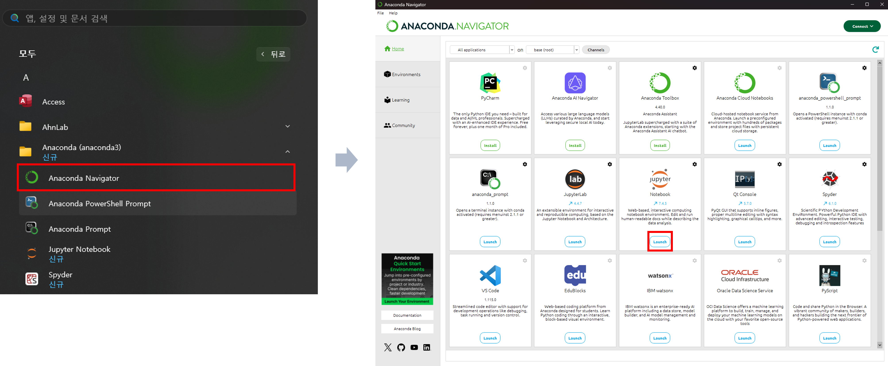
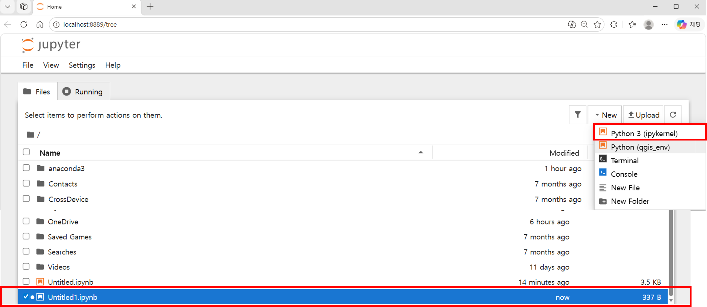
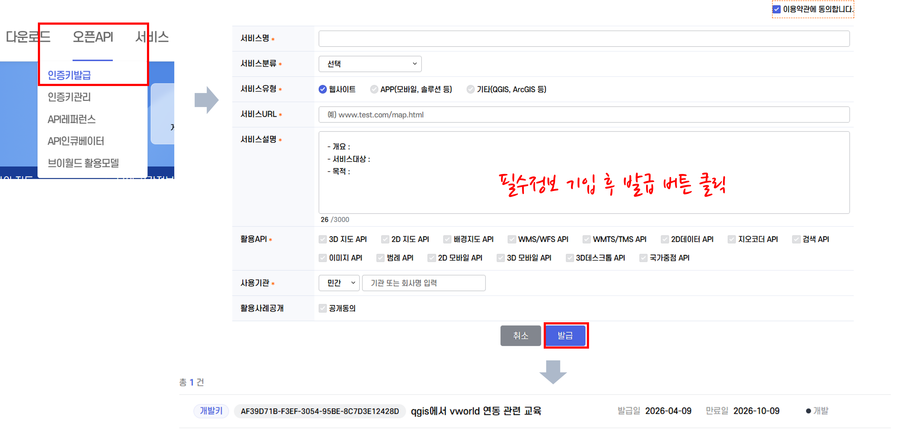
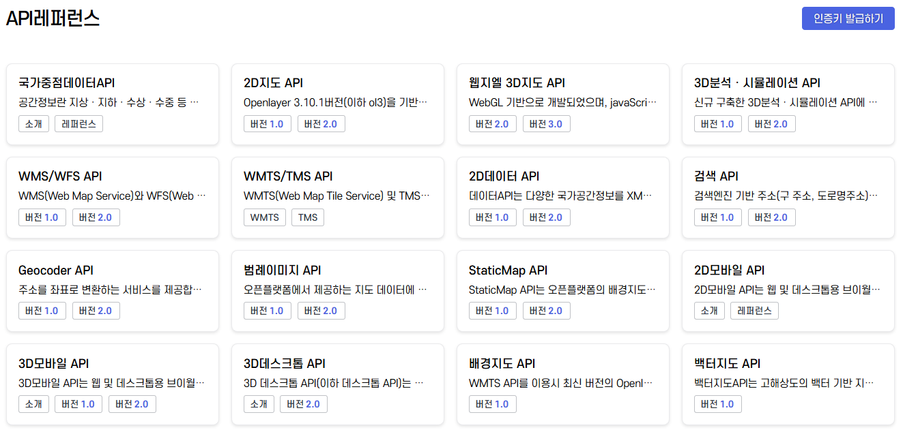
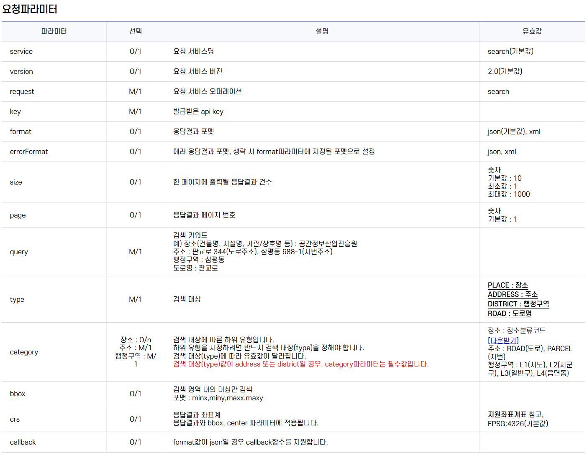
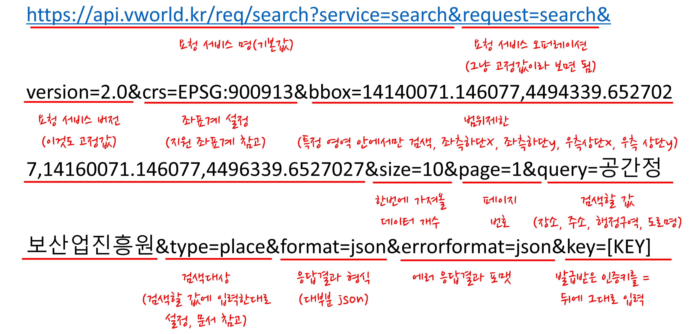
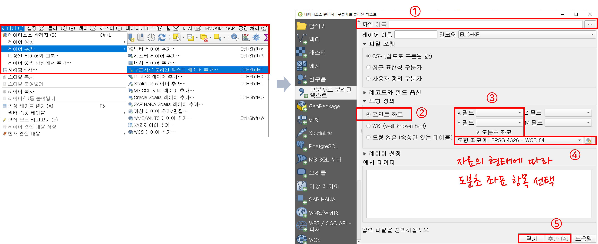
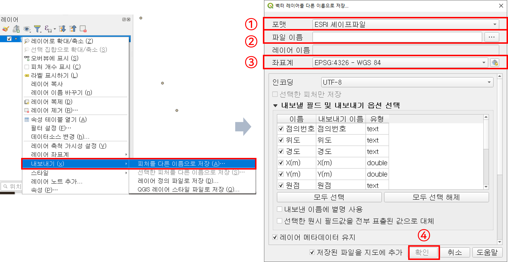

원포인트 교육_2026년
실습 환경 구성
1. 프로그램 다운로드 및 설치
-
아나콘다(Anaconda) 설치
-
아나콘다는 데이터 사이언스를 위해 다양한 기능을 제공해주는 도구 모음
-
라이브러리 설치에 소요되는 시간이 절약
-
R과 파이썬 프로그래밍 모두 아나콘다 환경에서 실행 가능
-
깔끔하고 직관적인 UX/UI 제공
-
-
아나콘다 홈페이지로 접속한 후 Free Download > Get Started 클릭
- https://www.anaconda.com
-
다운로드 받은 설치파일 더블클릭 후 별 다른 설정 없이 Next 버튼 클릭으로 설치 완료
-
-
주피터 노트북(Jupyter Notebook) 설치
-
웹 브라우저에서 파이썬 코드를 작성하고 단계적으로 실행 가능하도록 하는 개발자 도구
-
하나의 서버에 여러 명이 붙어서 동시에 작업이 가능
-
서버에 파일을 올리고 내리는 것이 매우 간단하여 손쉽게 파일 관리
-
코드 편집기나 IDE처럼 코드 자동 완성기능이 없음
-
-
시작 메뉴 > 아나콘다 내비게이터(Anaconda Navigator)를 실행해서 주피터 노트북의 Launch를 클릭

- 웹 브라우저 새로운 탭에 주피터 노트북이 실행되고 오른쪽 상단의 New > Python3을 클릭하면 새로운 파일이 생성

-
2. Jupyter Notebook 사용방법
-
주피터 노트북 실행 방법
- 기본적으로 셀(cell) 단위로 실행되고, [ ] 옆에 있는 네모 박스에 파이썬 코드를 입력
예제 코드 보기/숨기기(클릭)
print("Hello") - 기본적으로 셀(cell) 단위로 실행되고, [ ] 옆에 있는 네모 박스에 파이썬 코드를 입력
-
주피터 노트북 주요 단축키
- Ctrl + / : 주석 처리
- Ctrl + Enter: 편집 중인 셀 실행
- Shift + enter: 셀 실행 후 아래에 새로운 셀 추가
- b: 아래에 셀 추가
openAPI 사용방법
1. V-World 검색 API 인증키 발급
-
Open API(Application Programming Interface)
-
API는 어떠한 응용 프로그램에서 데이터를 주고 받기 위한 방법으로 오픈 API와 비공개 API로 구분
-
오픈 API는 누구나 사용할 수 있도록 공개된 API로 보통 API 키 발급 후 사용 가능
(예: Google Maps API, OpenAI API, Kakao API 등)
-
-
V-World 검색 API 인증키 발급
-
상단 메뉴에서 오픈 API > 인증키 발급을 클릭하고 해당 정보를 기입한 후 발급 버튼 클릭
-
발급이 완료되면 인증키 관리 화면에서 총 1건이라고 뜨는 것을 확인할 수 있음

-
2. V-World 검색 API 활용 방법
-
V-World API 레퍼런스
- 상단 메뉴에서 오픈 API > API 레퍼런스를 클릭하면 각 서비스별 API를 볼 수 있음

- 상단 메뉴에서 오픈 API > API 레퍼런스를 클릭하면 각 서비스별 API를 볼 수 있음
-
검색 API 2.0 레퍼런스
-
검색엔진 기반 주소(구 주소, 도로명주소)와 국가관심지점(명칭/장소) 검색 API
-
레퍼런스 페이지는 검색 요청을 어떻게 보낼지 설정하는 것으로 반드시 확인 필요
-
기본 요청 형태는 다음과 같고, 무슨 검색을 어떻게 할지를 설정하는 과정
- https://api.vworld.kr/req/search?key=인증키&[검색API 요청 파라미터]
-
검색API 요청 파라미터는 레퍼런스 문서에서 참고

- 장소 검색 예시의 기준은 다음과 같고, bbox, size, page, format, errorformat은 기본 값으로 자동 설정되므로 생략 가능

-
3. V-World 검색 API 실습
-
실습 흐름의 이해
-
전체 실습의 흐름
- V-World API 호출(requests) → JSON 파싱(json) → 좌표 추출(x, y) → QGIS 메모리 레이어 생성 → 포인트(feature) 추가 → 지도에 표시
-
프로그램별 기능
- 주피터 노트북은 V-World API를 호출하고 호출 결과를 JSON / CSV / GeoJSON으로 저장
-
QGIS
- 앞의 과정에서 저장된 파일을 불러와서 지도로 표시
-
-
Jupyter에서 API 호출 기본방법
- 설치된 라이브러리를 확인하고, 필요한 라이브러리를 호출한 후 API 호출
pip list: 설치된 라이브러리 확인pip install 라이브러리 이름: 라이브러리 설치import A: A라이브러리를 가져오라
예제 코드 보기/숨기기(클릭)
# request와 json 라이브러리 불러오기 ## requests는 웹 서버에 데이터를 요청하기 위한 가장 대중적인 라이브러리 ## json은 서버로부터 받은 JSON 형식의 데이터를 읽기 편하게 처리하기 위해 사용 import requests # 브이월드에서 발급받는 본인만의 인증 키 붙여넣기 API_KEY = "여기에_본인_API_KEY" # 브이월드의 서버 주소 url = "https://api.vworld.kr/req/search" # 어떤 데이터를 어떻게 보여달라고 요청하는 핵심 파라미터 설정 params = { "service": "search", "request": "search", "version": "2.0", # 좌표계 설정 "crs": "EPSG:4326", "bbox": "", "size": 10, "page": 1, # 검색어 작성 "query": "시청", # 검색 대상의 타입 "type": "place", # 검색 정밀도를 위해 브이월드 장소분류코드 참고 "category": "카테고리 입력", # 응답 형식 "format": "json", "key": API_KEY } # 설정한 URL과 파라미터를 조합해 요청을 보냄 response = requests.get(url, params=params) # 서버로부터 받은 JSON 형식의 응답을 Python 딕셔너리 형태로 변환 data = response.json() data
- 설치된 라이브러리를 확인하고, 필요한 라이브러리를 호출한 후 API 호출
-
Jupyter에서 API 호출 수정방법
- 위의 코드로는 데이터 10개만 추출되므로 전체 데이터가 추출되도록 코드 추가
예제 코드 보기/숨기기(클릭)
import json import math total = int(data['response']['record']['total']) size = params['size'] # 전체 페이지수 계산하는데 math.ceil는 소수점을 무조건 올림 처리 total_pages = math.ceil(total / size) print(f"총 데이터 개수: {total}") print(f"총 페이지 수: {total_pages}") # 전체 결과 저장할 리스트 생성 all_items = [] # total_pages 만큼 자동(반복)으로 요청 보냄 for page in range(1, total_pages + 1): params['page'] = page # 파라미터의 page 번호를 1, 2, 3... 순서대로 교체 response = requests.get(url, params=params) data = response.json() items = data['response']['result']['items'] all_items.extend(items) # 새로 가져온 10개를 전체 리스트(all_items)에 합침 print(f"최종 가져온 데이터 개수: {len(all_items)}") # 전체 데이터 중 앞부분 10개만 슬라이싱해서 출력 sample_items = all_items[ : 10] # json.dumps는 가독성을 위해 데이터를 예쁘게 정리(formatting) # indent=2는 들여쓰기는 2만큼 적용 # ensure_ascii=False: 한글이 깨지지 않고 정상적으로 출력 print(json.dumps(sample_items, indent=2, ensure_ascii=False)) - 위의 코드로는 데이터 10개만 추출되므로 전체 데이터가 추출되도록 코드 추가
-
API 호출결과 파일 저장
-
QGIS로 넘기려면 파일이 필요한데 JSON 또는 csv(엑셀에서 열 수 있는 표 형식)로 저장
-
QGIS에서 다루기 쉬운 csv 파일로 내보내기를 실습
예제 코드 보기/숨기기(클릭)
# csv 라이브러리 불러오기 import csv # API 응답 결과 중에서 우리가 실제로 필요한 검색 결과 리스트만 뽑아내는 작업 ## items 변수 안에는 각 장소의 이름, 주소, 좌표 등이 포함된 리스트가 담기게 됨 items = all_items # vworld_result.csv라는 이름의 파일을 쓰기(w) 코드로 열고, 한글이 깨지지 않도록 인코딩 설정 with open("vworld_result.csv", "w", newline='', encoding="utf-8-sig") as f: writer = csv.writer(f) # 파일의 맨 철 줄에 컬럼 이름을 삽입 writer.writerow(["name", "x", "y"]) # 검색 결과로 나온 장소들을 하나씩 꺼내어 반복 for item in items: name = item['title'] # 장소 이름 x = item['point']['x'] # 경도(X좌표) y = item['point']['y'] # 위도(Y좌표) # 추출한 정보를 [이름, x, y] 형태의 리스트로 만들어 파일에 한 줄씩 차곡차곡 저장 ## 파일은 기본위치인 사용자 이름 밑에 저장 writer.writerow([name, x, y]) -
4. QGIS에서 지도 열기
-
위치정보로 공간정보 자료 생성
- 메뉴 바의 레이어 > 레이어 추가 > 구분자로 분리된 텍스트 레이어 추가로 vworld_result.csv 불러오기
- 파일 이름: 불러오고자 하는 파일 선택
- 도형정의: 포인트 좌표
- X필드: 경도, Y필드: 위도(도분초 좌표 필요시 체크)
- 도형좌표계: EPSG:4326

- 포인트 벡터 레이어가 생성된 것을 확인하고, 레이어를 선택하여 내보내기 > 객체를 다른 이름으로 저장하기를 선택
- 포맷: ESRI 셰이프 파일
- 파일 이름: 파일 저장위치 및 이름 설정
- 좌표계 설정: EPSG: 4326

- 속성 테이블에서 속성 값이 깨지는 경우 인코딩을 변경해야 함
- 한글이 깨지지 않게 하려면 주로 EUC-KR, UTF-8로 설정
- 메뉴 바의 레이어 > 레이어 추가 > 구분자로 분리된 텍스트 레이어 추가로 vworld_result.csv 불러오기
openAPI 사용방법
1. V-World WMS/WFS API
-
WMS/WFS API 2.0 레퍼런스
-
WMS(Web Map Service)와 WFS(Web Feature Service)를 통해 고품질의 공간정보 서비스를 제공
-
기본 요청 형태는 다음과 같고, 무슨 검색을 어떻게 할지를 설정하는 과정
- https://api.vworld.kr/req/wms?key=인증키&[WMS Param]
- https://api.vworld.kr/req/wfs?key=인증키&[WFS Param]
-
검색API 요청 파라미터는 레퍼런스 문서에서 참고

- WFS 예시는 다음과 같고, 기본 요청 형태는 key, service, request, typename, output으로 반드시 포함

-
2. WMS/WFS API 실습
-
Jupyter에서 WFS 요청하기 기본방법
- 설치된 라이브러리를 확인하고, 필요한 라이브러리를 호출한 후 API 호출
pip list: 설치된 라이브러리 확인pip install 라이브러리 이름: 라이브러리 설치import A: A라이브러리를 가져오라
예제 코드 보기/숨기기(클릭)
# request와 json 라이브러리 불러오기 ## requests는 웹 서버에 데이터를 요청하기 위한 가장 대중적인 라이브러리 ## json은 서버로부터 받은 JSON 형식의 데이터를 읽기 편하게 처리하기 위해 사용 import requests import json # 브이월드에서 발급받는 본인만의 인증 키 붙여넣기 API_KEY = "여기에_본인_API_KEY" # 브이월드의 서버 주소 url = "https://api.vworld.kr/req/wfs" # 일부 데이터를 들고 오려면 필터를 해야함 ## 필터는 반드시 문자열로 작성 filter_xml = """ <ogc:Filter> <ogc:PropertyIsLike wildCard="*" singleChar="_" escapeChar="\\"> <ogc:PropertyName>addr</ogc:PropertyName> <ogc:Literal>*강남*</ogc:Literal> </ogc:PropertyIsLike> </ogc:Filter> """ # 어떤 데이터를 어떻게 보여달라고 요청하는 핵심 파라미터 설정 params = { "service": "WFS", "version": "1.1.0", "request": "GetFeature", "key": API_KEY, # 응답결과 파일 포맷(GML2, GML3, application/json, text/javascript) "output": "application/json", # 레이어 리스트를 보고 레이어명 입력(최대 4개) "typename": "레이어 리스트 참고", "srsname": "EPSG:5180", "filter": filter_xml } # 설정한 URP과 파라미터를 조합해 요청을 보냄 response = requests.get(url, params=params) # 서버로부터 받은 JSON 형식의 응답을 Python 딕셔너리 형태로 변환 data = response.json() data - 설치된 라이브러리를 확인하고, 필요한 라이브러리를 호출한 후 API 호출
-
API 호출결과 파일 저장
- QGIS로 넘기려면 파일이 필요한데 JSON 또는 csv(엑셀에서 열 수 있는 표 형식)로 저장
예제 코드 보기/숨기기(클릭)
# vworld_wfs.geojson으로 저장하는데 쓰기모드(w), 한글이 깨지지 않도록 인코딩 설정 ## 위에서 저장한 파일은 열고(with open) f라는 이름으로 부름(as f) ## json.dump는 파이썬의 딕셔너리나 리스트 형태인 data를 JSON 형식의 문자열로 변환하여 파일(f)에 바로 기록하는 함수 ## ensure_ascii=False라는 옵션이 없으면 한글이 유니코드로 저장(한글로 저장하기 위해 설정) with open("vworld_wfs.geojson", "w", encoding="utf-8") as f: json.dump(data, f, ensure_ascii = False) - QGIS로 넘기려면 파일이 필요한데 JSON 또는 csv(엑셀에서 열 수 있는 표 형식)로 저장
-
Maxfeatures 파라미터 관련 에러
-
저장된 데이터는 총 객체가 1,000개만 저장되어 있는데 data를 보면 totalFeatures가 39,088개로 일부만 저장됨
- WFS API 요청은 maxFeature 파라미터의 기본 값이 1,000, 최소값이 1, 최대값이 1,000으로 설정됨
-
한 번에 가져올 수 있는 데이터의 양이 제한되어 있기 때문에 페이지네이션(pagination) 필요
- 여러 번 나누어 호출하여 전체 데이터를 수집하는 방법
- 여러 번 나누어 호출하여 전체 데이터를 수집하는 방법
-
V-World 정책상 startIndex를 1000개 이상으로 늘릴 수가 없으므로 루프를 통한 자동 수집은 불가능
- maxFeatures도 테스트 해 본 결과 1,000개 이상으로 늘릴 수가 없으므로 사실상 필터 조건을 지역별로 세분화해서 돌리는 방법 밖에 없음
-
-
참고(GML 파일로 요청했을 때 수정코드)
예제 코드 보기/숨기기(클릭)
import requests API_KEY = "여기에_본인_API_KEY" url = "https://api.vworld.kr/req/wfs" params = { "service": "WFS", "version": "1.1.0", "request": "GetFeature", "key": API_KEY, "output": "GML2", # GML 형식 요청 # 레이어 리스트를 보고 레이어명 입력 "typename": "레이어 리스트 참고" } # 1. 요청 보내기 response = requests.get(url, params=params) # 2. 데이터 가져오기 (json() 대신 text 사용) # GML은 텍스트 형태의 문서이므로 .text를 사용해야 에러가 나지 않습니다. data = response.text # 3. 파일로 저장하기 # json.dump 대신 일반 파일 쓰기 방식(f.write)을 사용합니다. with open("vworld_wfs.gml", "w", encoding="utf-8") as f: f.write(data)
3. QGIS에서 결과 확인
-
결과 파일 레이어 추가하는 방법
-
탐색기를 이용해서 결과 파일이 있는 위치에서 파일을 더블클릭하면 레이어 목록에 추가됨
-
메뉴에서 레이어 > 레이어 추가 > 벡터 레이어 추가하면 레이어 목록에 추가됨
-
QGIS Python 실습
1. V-World 검색 API 실습 문제점
-
파싱과 결과 확인의 분리
- 앞선 과정에서 했던 V-World 검색 API 실습은 Jupyter Notebook으로 V-World 검색 API를 파싱하고 결과를 저장하여 QGIS에서 확인하였음
-
파싱과 결과 확인의 통합
- 두 과정을 통합하여 파싱 결과를 QGIS 화면에 바로 띄우도록 수정하는 실습 수행
2. V-World 검색 API 실습 수정
-
QGIS Python 주요 클래스
-
QgsVectorLayer
- 점, 선, 면 같은 벡터 데이터의 도형 자료와 속성 자료를 관리
-
dataProvider()
- 레이어의 실제 데이터에 접근하기 위한 통보로 layer.dataProvoder()를 호출하여 사용
-
addAttributes(), updataFiels()
- 데이터의 속성 컬럼을 추가하고, 추가한 정보를 새로고침
-
QgsFeature
- 지도 위의 하나의 객체(점 하나, 혹은 행 하나)를 의미하는 단위
-
setGeometry(), setAttributes()
- 생성한 QgsFeature에 도형 정보를 부여하고, 속성 정보를 채움
-
addFeature()
- 내용을 채운 QgsFeature를 실제 레이어에 최종적으로 집어넣는 작업
-
updateExtents()
- 레이어가 차지하는 전체 범위를 다시 계산
-
QgsProject.instance().addMapLayer(layer)
- 메모리 상에 있는 레이어를 현재 실행 중인 QGIS 프로젝트 켄버스 창에 실제로 나타나게 하는 역할
- 메모리 상에 있는 레이어를 현재 실행 중인 QGIS 프로젝트 켄버스 창에 실제로 나타나게 하는 역할
예제 코드 보기/숨기기(클릭)
# request와 json 라이브러리 불러오기 ## requests는 웹 서버에 데이터를 요청하기 위한 가장 대중적인 라이브러리 ## json은 서버로부터 받은 JSON 형식의 데이터를 읽기 편하게 처리하기 위해 사용 import requests # 브이월드에서 발급받는 본인만의 인증 키 붙여넣기 API_KEY = "여기에_본인_API_KEY" # 브이월드의 서버 주소 url = "https://api.vworld.kr/req/search" # 어떤 데이터를 어떻게 보여달라고 요청하는 핵심 파라미터 설정 params = { "service": "search", "request": "search", "version": "2.0", # 좌표계 설정 "crs": "EPSG:4326", "bbox": "", "size": 80, "page": 1, # 검색어 작성 "query": "시청", # 검색 대상의 타입 "type": "place", # 검색 정밀도를 위해 브이월드 장소분류코드 참고 "category": "카테고리 입력", # 응답 형식 "format": "json", "key": API_KEY } # 설정한 URL과 파라미터를 조합해 요청을 보냄 response = requests.get(url, params=params) # 서버로부터 받은 JSON 형식의 응답을 Python 딕셔너리 형태로 변환 data = response.json() # 생성할 레이어의 타입을 정의하고 좌표계 설정, vworld는 레이어 이름, memory는 임시레이어로 생성 layer = QgsVectorLayer("Point?crs=EPSG:4326", "vworld", "memory") # dataProvider는 레이어에 데이터를 넣거나 수정할 수 있는 통로를 활보 provider = layer.dataProvider() # addAttributes는 속성 테이블에 열을 추가 provider.addAttributes([QgsField("name", QVariant.String)]) provider.addAttributes([QgsField("address", QVariant.String)]) provider.addAttributes([QgsField("x", QVariant.String)]) provider.addAttributes([QgsField("y", QVariant.String)]) # 방금 추가한 속성 칸을 레이어에 최종적으로 적용 layer.updateFields() for item in data['response']['result']['items']: feat = QgsFeature() # 새로운 '피처'(도형+속성 하나) 객체 생성 x = float(item['point']['x']) # API 데이터 속 경도(x) y = float(item['point']['y']) # API 데이터 속 위도(y) name = item['title'] # API 데이터 속 기관 이름 address = item['address']['road'] # API 데이터 속 주소(여기서는 도로명주소) # 지점의 좌표를 설정 (Geometry) feat.setGeometry(QgsGeometry.fromPointXY(QgsPointXY(x, y))) # 지점의 이름 정보를 입력 (Attributes) 열 추가된 순서대로!! feat.setAttributes([name, address, x, y]) # 준비된 피처를 레이어(provider)에 추가 provider.addFeature(feat) # 레이어에 추가된 모든 점들의 범위를 계산 layer.updateExtents() # QGIS 메인 프로젝트 화면에 표시 QgsProject.instance().addMapLayer(layer)
-